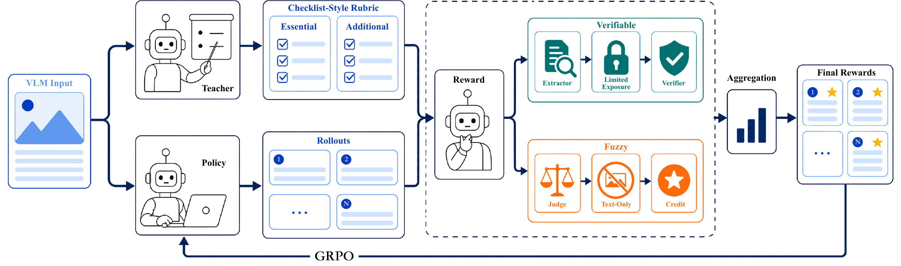

Reinforcement Learning with Robust Rubric Rewards
Extending rubric feedback into online learning: execute each criterion faithfully, preserve its signal, and prevent additional credit from compensating for essential failures.

RLR³ results
| Training mixture | RLVR | RLR³ | Gain |
|---|---|---|---|
| ViRL | 76.4 | 77.7 | +1.3 |
| OpenMMR | 76.4 | 78.1 | +1.7 |
| DeepVision | 77.4 | 78.2 | +0.8 |
Reported on Qwen3-VL-30B-A3B. Each row compares methods within the same training mixture.
| Setting | Macro average |
|---|---|
| RLVR | 76.4 |
| RLR³ · proprietary rubric pipeline | 77.7 |
| Qwen3-VL-30B-A3B-Instruct generator | 77.2 |
| Qwen3-VL-30B-A3B-Thinking generator | 75.8 |
Explore method details
Execute with minimal exposure
Verifiable criteria use a text-only extractor followed by a deterministic verifier. Target arguments remain hidden from the extractor. Fuzzy criteria use a text-only judge with their grounding reference. Both paths exclude the source image.
Preserve essential failures
Decoupled normalization operates criterion by criterion across a response group. Hierarchical aggregation then gates the normalized reward: one essential score below 0.5, or at least two essential scores below 1, blocks content reward. A separate format mask handles response-level violations.
Toward a common model foundation
The open-source rubric-generator experiment initializes the generator from the same checkpoint as the policy and GenRM.
Rubric execution combines criterion-level verification with essential-aware reward aggregation.